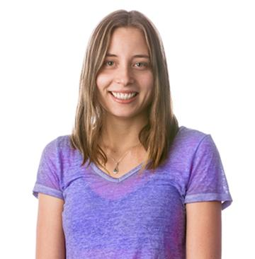

Header

I am mostly a web designer, but I also practice figure painting, web developing, graphic and editorial design, marketing and photography. I love listening to bluegrass music, studying foreign languages, taking hikes through bluffs and natural parks, watching movies, traveling abroad, or simply having a fresh cup of coffee in the morning.
I am cheerful, optimistic, and charismatic. I love being around people of different cultures and backgrounds, and get to know what makes our cultures beautiful and unique. I have a 3 year old son, and he has brought us a life full of joy and surprises.
Connect with me